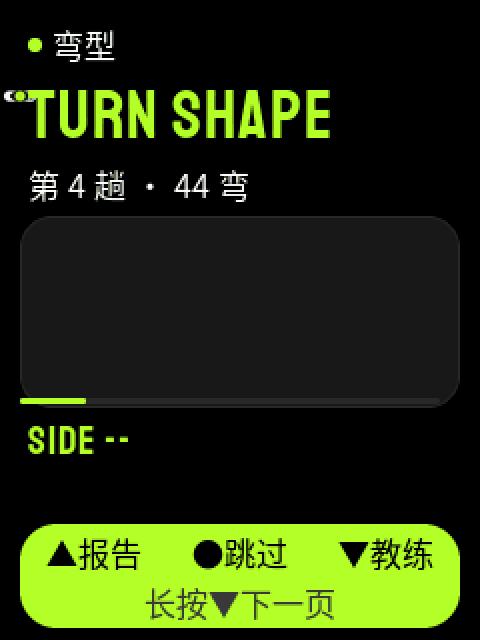
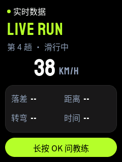

English · 简体中文
Product
Product and pages
Use case
A skier uses the device after a run, on the lift or during a rest break. The phone stays in a pocket with Bluetooth on. The user keeps the gloves on and pushes only three physical keys: UP, OK, and DOWN.
Four pages in one loop
The four pages are at the same level. A short press of DOWN opens the next page. A short press of UP opens the previous page. The loop wraps at each end. A long press of OK opens the Coach page from Live data, Run report, or Turns. On the Coach page, another long press of OK starts recording. Releasing OK sends the question.


| Page | Content |
|---|---|
| Live data | Speed, drop, distance, turns, and time. The phone sends one frame each second. |
| Run report | Heygo IQ (0 to 200), the main issue, and one tip. One report for each run. |
| Turns | The line of the run, 8 turns on each page, with speed, angle, and radius. |
| AI coach | The user holds OK, speaks, and releases OK. The device plays the answer. |
Turn browsing
A short press of OK selects the next turn. A long press of UP selects the previous turn. A long press of DOWN selects the next group. Each group contains at most 8 turns. The device caches 3 groups and requests missing groups through TURN_REQUEST.

Phone events
Popup
A popup opens immediately and cancels an active coach conversation. A 10-second countdown starts after playback, or immediately without audio. Any key closes the popup and restores the previous page. The Coach page returns to Ready. A new popup replaces the old popup.
Run start
When the phone detects a run start, it requests the live data page. The device waits for an active conversation or popup to end before it changes the page.
Navigation and link feedback
Page rail
The right rail has four positions in page order. A lime thumb marks the current page. Each page change animates for 180 ms. Popups hide the rail.
Link state on every page
All five screens use one status bar. It has a page dot, the page name, a link dot, and the link text. The link text is "connected", "not connected", or "no voice".
